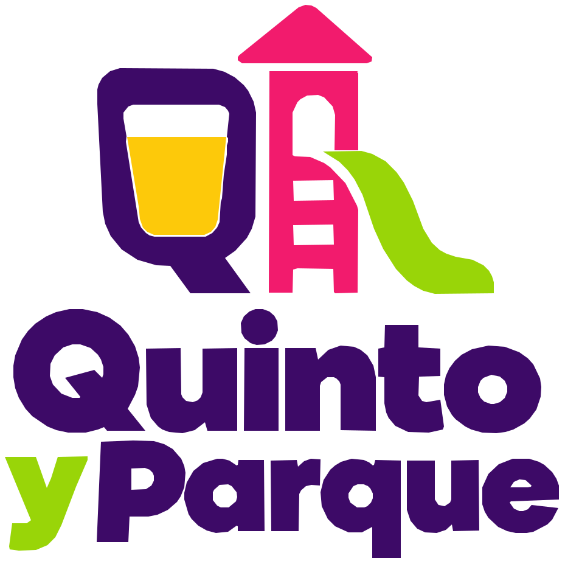
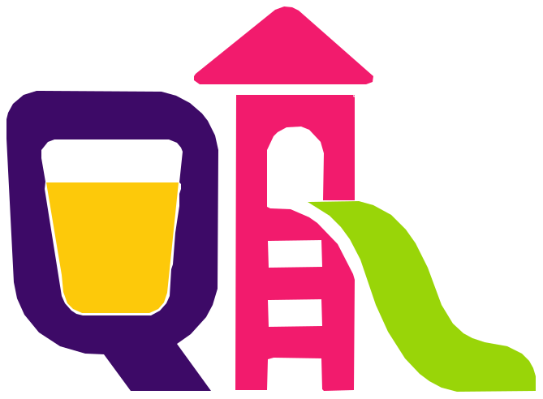

Valencia y alrededores
Tu terraza favorita.Su parque ideal.

Haz clic en un punto del mapa para seleccionar la ubicación. Solo se publicará después de revisarlo.
Inicia sesión con Google para valorar este sitio.
La reseña se publicará inmediatamente. No incluyas datos personales en el comentario.
Consulta y edita las opiniones que has publicado.
Si echas en falta una reseña antigua, abre ese bar en el mapa una vez con tu sesión iniciada para recuperarla aquí.